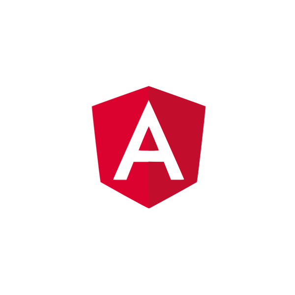

Olá!! Sou Daniel Castagna!
Desenvolvedor Front-end com experiência em Angular 2+, JavaScript, TypeScript e consumo de APIs REST. Experiente em projetos gerenciados por Metodologias Ágeis. Formado em Sistemas de Informação.

Desenvolvedor Front-end com experiência em Angular 2+, JavaScript, TypeScript e consumo de APIs REST. Experiente em projetos gerenciados por Metodologias Ágeis. Formado em Sistemas de Informação.